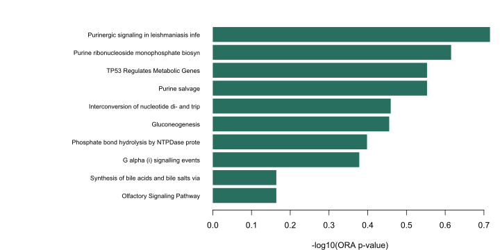

Overview
Explore metabolite sets and run enrichment analyses from an AI agent. mseapca MCP wraps the official mseapca R package with mcptools, without changing its algorithms.
A fixed snapshot from the mseapca database application provides 4,741 sets across eight sources. KEGG-origin sets, KEGG cross-references and KEGG compound identifiers are excluded. No live AI search or database update service is called.
Available methods
Enrichment analysis
- Over-representation analysis (ORA)
- Detected, full and estimated background models
- ORA uncertainty ranges and simulation
- Quantitative MSEA with membership permutations
- Sample presence-list SSEA scores
Metabolite sets
- Reactome and WikiPathways
- PathBank and integMET
- ILDMDB, MACdb, ProMENDA and MetSigDis
- Literal name, HMDB, ChEBI, InChIKey or PubChem matching
- Custom sets and explicit provenance
Non-KEGG does not mean unrestricted reuse. Database terms remain separate from the MIT wrapper license; PathBank restricts commercial reuse. See data sources and licensing. SSEA here scores presence lists and is not expression-based ssGSEA or GSVA.
Real metabolome example
The complete loadings::fasting mouse-liver dataset contains 10 samples and 282 metabolites. The demo selects positive PC1 loadings with exploratory p < 0.05, then runs detected-background ORA against 20 Reactome sets chosen by detected coverage.

Call demo_data(dataset="fasting").
Pass significant, detected and set_ids to analyze_ora.
Inspect p.value, q.value, overlaps and the analysis conditions.The supplied Reactome reference is human and the assay is mouse. This is an illustrative software example, not validated cross-species inference. PCA sign is arbitrary and the selection p-values are unadjusted. The alternative membership demo is explicitly synthetic, not measured experimental data.
Getting started
The hosted endpoint is deployed privately on Cloud Run and has passed authenticated tests for all nine tools. Google Cloud IAM authentication is required; anonymous requests are rejected. Public research access is pending approval. See the repository for local R and Docker setup.
Claude Code
Hosted endpoint is private (Google Cloud IAM). See local setup in the repository.The public hosted connection command will appear after anonymous access is approved. Authorized Google Cloud users can test the private endpoint using the repository instructions. See the official Claude Code guide.
Other clients
Use a client that supports remote Streamable HTTP MCP servers. Authentication must match the deployed service. Actual ChatGPT and Claude connections have not been tested for this server. See the ChatGPT connection documentation and Claude custom connector guide.
The Docker gateway limits each request to 2 MiB, shared traffic to 60 requests/minute with burst 10, and each worker to 20 seconds. HTTP 413/429 indicates a size or traffic limit. The shared Cloud Run monthly spend cap is JPY 1,000 across this project, not per service. Enforcement can lag; build and storage charges are outside this cap. This is not a guaranteed total bill ceiling.
Available tools
| Tool | Inputs | Output |
|---|---|---|
| catalog_info | None | Snapshot, source counts and identifier namespaces |
| search_sets | query, source, organism, limit, offset | Paginated set metadata |
| get_sets | set_ids, identifier, max_members | Members, source and truncation |
| lookup_metabolites | query, exact, limit | Literal identifier matches |
| demo_data | dataset: fasting or membership | Analysis-ready identifiers and real fasting matrix |
| analyze_ora | significant, detected, sets, identifier, method, lambda | p-values, BH q-values, overlaps and contingency tables |
| analyze_range | ORA inputs, method, nsim, probs | Official ORA ranges |
| analyze_msea | x, metabolite_ids, y, sets, maxiter, seed | Enrichment scores, p-values and permutation q-values |
| analyze_ssea | samples, detected, sets, identifier | Sample-by-set -log(p) matrix |
Analysis sets use set_ids and/or custom_sets. All results are JSON text content with ok, warnings and conditions or an error. See the full input schema and limits below.
Documentation
References
- Yamamoto et al. (2014). Statistical hypothesis testing of factor loading in principal component analysis and its application to metabolite set enrichment analysis. BMC Bioinformatics.
- Yamamoto (2023). Single sample enrichment analysis. Jxiv preprint.
- Yamamoto (2024). ORA accounting for undetected metabolites. Jxiv preprint.
CRAN: mseapca · mcptools · Database application (repository access required)
About
Developer: Hiroyuki Yamamoto
Wrapper and website: MIT. mseapca and loadings: LGPL-3. Database sources retain their own terms.